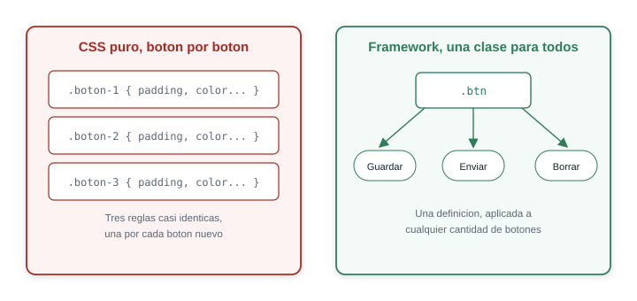
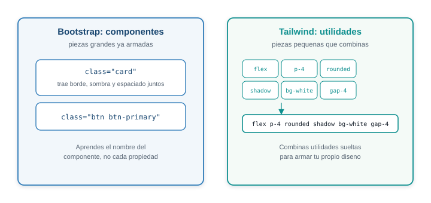
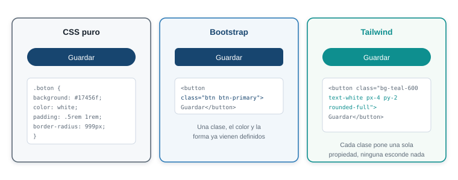
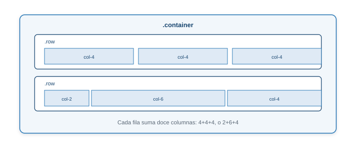
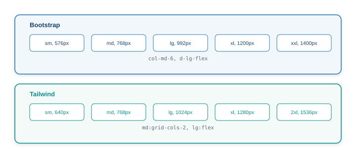
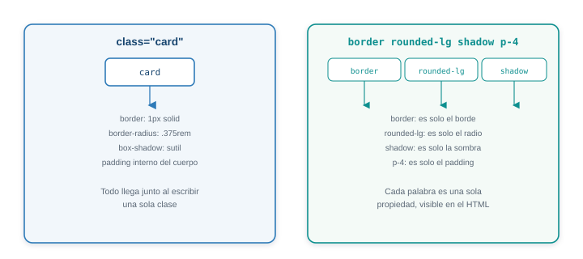
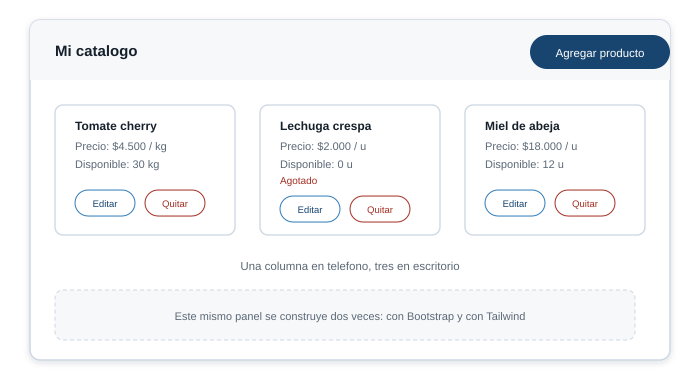

Semana 6. Frameworks CSS: Bootstrap 5 y Tailwind CSS
| Asignatura | Programación Web (IF2003) |
| Grupo | 603 de Ingeniería Informática |
| Unidad | Unidad 2. Frontend |
Diapositivas de la sesión
Laboratorio interactivo de Bootstrap y Tailwind
1 Lo que vas a lograr
La semana pasada escribiste HTML y CSS puro para la vitrina pública de tu proyecto: cada regla, cada padding, cada media query salió de tu propia mano. Esa base era necesaria para que entendieras qué hace realmente el navegador con esas reglas. Esta semana das el siguiente paso: usar un framework CSS, una hoja de estilos ya escrita por otros que resuelve los problemas más comunes de maquetación para que no los repitas cada vez.
Vas a construir la misma pieza del proyecto, el panel de catálogo del productor, dos veces: primero con Bootstrap 5, después con Tailwind CSS. No es trabajo doble por capricho: es la única forma de comparar dos filosofías distintas con la experiencia propia, no solo con lo que dice un artículo.
Al terminar la guía sabes:
- Explicar qué problema resuelve un framework CSS frente a escribir CSS puro, y qué precio se paga a cambio.
- Distinguir un framework de componentes (Bootstrap) de uno utility-first (Tailwind), con un ejemplo concreto de cada uno.
- Usar el sistema de grillas de Bootstrap, sus componentes principales y sus clases de utilidad.
- Usar las clases de utilidad de Tailwind para maquetar, dar color, tipografía y responsividad.
- Elegir con criterios técnicos, no con gusto personal, cuál framework conviene para una tarea dada.
- Tener el panel de catálogo del productor de tu proyecto construido en ambas versiones, con una sustentación escrita de tu elección.
Necesitas la vitrina pública de la Semana 5 (index.html y estilos.css) publicada en la rama main de tu repositorio. Ninguno de los dos frameworks de hoy necesita instalar nada: los dos se incluyen por CDN, una dirección de internet desde donde el navegador descarga el archivo la primera vez que abres la página. Sigues sin necesitar Node.js, un empaquetador ni una terminal para compilar nada: eso llega más adelante en el curso, cuando el frontend se integre con el proyecto completo.
2 Parte 1. Por qué existen los frameworks CSS
El problema que ya viviste la semana pasada
Construir la tarjeta de un producto, un botón con estados de hover y focus, o una galería responsiva a mano no es difícil una vez, como hiciste en la Semana 5. El problema aparece cuando ese mismo trabajo se repite: un botón “Guardar”, después un botón “Enviar”, después uno “Cancelar”, cada uno con su propia regla CSS casi idéntica a la anterior, solo con el color o el texto cambiado.

Un framework CSS extrae el patrón repetido a una sola clase, y esa clase queda lista para cualquier botón nuevo.
Un framework CSS es, en el fondo, una hoja de estilos ya escrita, probada por miles de proyectos, que resuelve de antemano los problemas más comunes de maquetación: una grilla que funciona en cualquier pantalla, un botón que ya tiene su estado de hover resuelto, un sistema de espaciados consistente en vez de números sueltos como 13px o 27px regados por el archivo. Incluirlo no reemplaza lo que aprendiste la semana pasada: sigues necesitando HTML semántico y seguir entendiendo qué hace cada regla, porque un framework mal usado también puede terminar en una página desordenada.
Lo que gana un equipo al usar un framework:
- Velocidad. Un componente de interfaz que tomaría media hora a mano (un menú desplegable accesible, una alerta con botón de cerrar) ya viene resuelto.
- Consistencia. Todos los botones, todas las tarjetas, todo el espaciado sigue las mismas reglas sin que nadie tenga que acordarse de repetirlas.
- Una base ya revisada. Miles de proyectos ya encontraron los errores de accesibilidad y de compatibilidad entre navegadores más comunes; el framework ya los corrigió.
Lo que se paga a cambio:
- Una curva de aprendizaje propia. Hay que aprender el vocabulario del framework (los nombres de sus clases o de sus componentes), además de CSS.
- Peso adicional. El navegador descarga código para componentes que quizás tu página nunca usa, salvo que el framework permita recortarlo.
- Un estilo visual reconocible, salvo que se personalice a propósito: una página con Bootstrap sin ajustes se ve “a Bootstrap”.
Dos filosofías, no un framework mejor que el otro
No todos los frameworks CSS resuelven el problema de la misma forma. Bootstrap y Tailwind representan las dos filosofías más usadas en la industria hoy, y esta semana las trabajas juntas para que la diferencia deje de ser una definición de manual y se vuelva algo que experimentaste con tus propias manos.

Bootstrap es un framework de componentes: entrega piezas de interfaz completas, ya diseñadas y con su propio nombre de clase (card, navbar, btn). Escribes una clase y llega el componente entero, con su tipografía, sus colores, su espaciado y su comportamiento ya decididos.
Tailwind es un framework utility-first: entrega piezas mínimas, cada una responsable de una sola propiedad CSS (flex, p-4, rounded-lg, text-white), y tú las combinas para construir tu propio diseño. No hay un componente card predefinido: hay utilidades que, combinadas, arman una tarjeta con tu propia apariencia.
Ni Bootstrap ni Tailwind reemplazan el CSS que aprendiste en la Semana 5: los dos generan CSS por detrás, y ese CSS sigue las mismas reglas de cascada, especificidad y modelo de caja que ya conoces. La diferencia está en qué escribes tú para llegar a ese resultado.
El mismo botón, escrito de las tres formas:

En CSS puro escribes la regla completa una vez y la reutilizas con una clase propia. En Bootstrap, una clase ya trae el diseño completo. En Tailwind, cada palabra de la clase es una sola propiedad, visible sin abrir ningún archivo CSS.
| Criterio | CSS puro | Bootstrap | Tailwind |
|---|---|---|---|
| Qué escribes | Cada propiedad, tú decides el valor | El nombre del componente | Una utilidad por propiedad |
| Tamaño del CSS final | El mínimo posible, el que tú escribiste | Grande, salvo que se recorte lo que no se usa | Pequeño en producción: solo genera las clases que tu HTML usa de verdad |
| Curva de aprendizaje | CSS puro, sin vocabulario adicional | Aprender los nombres de los componentes | Aprender los nombres de las utilidades |
| Personalizar el diseño | Control total, pero todo a mano | Requiere sobrescribir estilos del componente | Se ajusta con variables del propio Tailwind, sin pelear contra nada |
| Legibilidad del HTML | Limpio, la clase no dice cómo se ve | Limpio, una clase por componente | Cargado de clases cortas, pero explícito: se lee la apariencia sin abrir el CSS |
| Cuándo conviene | Páginas pequeñas o con diseño muy propio | Salir rápido con una interfaz estándar y consistente | Un diseño propio, con control fino, sin escribir CSS a mano |
Guarda esta tabla: el taller final de hoy te pide sustentar, con criterios como estos, cuál framework vas a seguir usando en tu proyecto.
3 Parte 2. Bootstrap 5
Cómo se incluye
Bootstrap se incluye con dos líneas: una hoja de estilos (link) y un archivo de JavaScript (script) que le da comportamiento a los componentes interactivos (menús desplegables, modales, alertas que se cierran). Los dos se cargan desde un CDN, sin instalar nada.
<!DOCTYPE html>
<html lang="es">
<head>
<meta charset="UTF-8">
<meta name="viewport" content="width=device-width, initial-scale=1.0">
<title>Panel del productor</title>
<link
href="https://cdn.jsdelivr.net/npm/bootstrap@5.3.8/dist/css/bootstrap.min.css"
rel="stylesheet">
</head>
<body>
<script
src="https://cdn.jsdelivr.net/npm/bootstrap@5.3.8/dist/js/bootstrap.bundle.min.js">
</script>
</body>
</html>El link de Bootstrap va en <head>, igual que tu propio estilos.css. Si usas los dos juntos, tu archivo va después del de Bootstrap: la cascada de la Semana 5 sigue aplicando, así que la regla que carga al final gana cuando ambas tienen la misma especificidad, y eso te deja sobrescribir lo que necesites de Bootstrap con tus propias clases.
<link href="https://cdn.jsdelivr.net/npm/bootstrap@5.3.8/dist/css/bootstrap.min.css" rel="stylesheet">
<link rel="stylesheet" href="estilos.css">El script de Bootstrap va justo antes de cerrar </body>, como cualquier script que no necesita bloquear el resto de la carga de la página. La versión 5.3.8 es la última estable de la serie 5.x al momento de escribir esta guía; verifica en getbootstrap.com si existe una más reciente antes de empezar el taller.
El sistema de grillas de doce columnas
Bootstrap organiza el ancho de la página en una grilla de doce columnas, pensada para que cualquier combinación de anchos sume un número exacto y previsible.

Cada fila (row) reparte sus columnas hasta sumar doce, sin importar cuántos elementos tenga.
Tres niveles anidados:
<div class="container">
<div class="row">
<div class="col-4">Ocupa 4 de 12</div>
<div class="col-4">Ocupa 4 de 12</div>
<div class="col-4">Ocupa 4 de 12</div>
</div>
</div>| Clase | Qué hace |
|---|---|
container |
Centra el contenido con un ancho máximo, y le da un margen lateral en pantallas angostas |
container-fluid |
Igual que container, pero ocupa siempre el 100% del ancho disponible, sin límite máximo |
row |
Contenedor de columnas. Por debajo usa Flexbox: es un display: flex con los márgenes ya resueltos |
col-N |
Una columna que ocupa N de las doce partes disponibles, con N de 1 a 12 |
col (sin número) |
Una columna que reparte el espacio sobrante en partes iguales con sus hermanas |
Los números no tienen que sumar doce en cada fila: si suman menos, sobra espacio; si un grupo se pasa de doce, el sobrante salta a una línea nueva.
Breakpoints: la grilla que responde
Cada tamaño de columna puede llevar un prefijo de breakpoint, para que el número de columnas cambie según el ancho de pantalla, con la misma lógica mobile-first que aprendiste la semana pasada: sin prefijo, la regla aplica desde el teléfono; el prefijo agrega una regla que reemplaza esa base a partir de cierto ancho.

<div class="row">
<div class="col-12 col-md-6 col-lg-4">
Una columna completa en telefono, la mitad en tablet, un tercio en escritorio
</div>
</div>| Prefijo | Ancho mínimo |
|---|---|
| (ninguno) | Cualquier ancho, es la base |
sm |
576px |
md |
768px |
lg |
992px |
xl |
1200px |
xxl |
1400px |
col-12 col-md-6 col-lg-4 se lee de izquierda a derecha, agregando reglas a medida que crece la pantalla: doce columnas (el ancho completo) en teléfono, seis a partir de md, cuatro a partir de lg. Es exactamente el mismo patrón mobile-first de la Semana 5, expresado con clases en vez de con @media escritos a mano.
Componentes principales
Navbar, la barra de navegación superior:
<nav class="navbar navbar-expand-lg bg-body-tertiary">
<div class="container-fluid">
<a class="navbar-brand" href="#">Mercado Campesino</a>
<button class="navbar-toggler" type="button" data-bs-toggle="collapse"
data-bs-target="#menuPrincipal" aria-controls="menuPrincipal"
aria-expanded="false" aria-label="Abrir menu de navegacion">
<span class="navbar-toggler-icon"></span>
</button>
<div class="collapse navbar-collapse" id="menuPrincipal">
<ul class="navbar-nav ms-auto">
<li class="nav-item"><a class="nav-link active" href="#">Catalogo</a></li>
<li class="nav-item"><a class="nav-link" href="#">Pedidos</a></li>
</ul>
</div>
</div>
</nav>navbar-expand-lg mantiene el menú siempre visible a partir del breakpoint lg, y lo colapsa detrás de un botón hamburguesa en pantallas más angostas. data-bs-toggle y data-bs-target son los que activan el comportamiento de abrir y cerrar: esa lógica vive en el bootstrap.bundle.min.js que enlazaste antes, sin que tengas que escribir una línea de JavaScript.
Card, la tarjeta de contenido:
<div class="card" style="width: 18rem;">
<div class="card-body">
<h5 class="card-title">Tomate cherry</h5>
<p class="card-text">Precio: $4.500 / kg. Disponible: 30 kg.</p>
<button class="btn btn-primary">Editar</button>
<button class="btn btn-outline-danger">Quitar</button>
</div>
</div>card trae el borde, el radio de esquina y el espaciado interno ya resueltos. btn es la clase base de cualquier botón de Bootstrap, y siempre va acompañada de una clase de variante (btn-primary, btn-outline-danger, btn-secondary) que define el color según su intención.
Formularios, con las clases que reemplazan al CSS que escribiste a mano la semana pasada:
<form>
<div class="mb-3">
<label for="nombreProducto" class="form-label">Nombre del producto</label>
<input type="text" class="form-control" id="nombreProducto" required>
</div>
<div class="mb-3">
<label for="precioProducto" class="form-label">Precio</label>
<input type="number" class="form-control" id="precioProducto" min="0" required>
</div>
<button type="submit" class="btn btn-primary">Guardar producto</button>
</form>form-control da a cada campo el mismo ancho, el mismo borde y el mismo estado de focus. form-label da a cada etiqueta el mismo espaciado respecto a su campo. mb-3 es una clase de utilidad de espaciado, un margen inferior de nivel 3: Bootstrap no es solo componentes, también trae un juego de utilidades más pequeño que el de Tailwind, para los ajustes puntuales que no merecen un componente completo.
Modal, una ventana emergente para agregar o editar un producto sin salir de la página:
<button type="button" class="btn btn-primary" data-bs-toggle="modal"
data-bs-target="#modalProducto">
Agregar producto
</button>
<div class="modal fade" id="modalProducto" tabindex="-1" aria-labelledby="tituloModal"
aria-hidden="true">
<div class="modal-dialog">
<div class="modal-content">
<div class="modal-header">
<h5 class="modal-title" id="tituloModal">Nuevo producto</h5>
<button type="button" class="btn-close" data-bs-dismiss="modal"
aria-label="Cerrar"></button>
</div>
<div class="modal-body">
<input type="text" class="form-control" placeholder="Nombre del producto">
</div>
<div class="modal-footer">
<button type="button" class="btn btn-secondary" data-bs-dismiss="modal">Cancelar</button>
<button type="button" class="btn btn-primary">Guardar</button>
</div>
</div>
</div>
</div>Igual que el navbar, el modal abre y cierra solo gracias a data-bs-toggle y data-bs-dismiss, sin JavaScript propio. aria-labelledby, aria-hidden y aria-label ya vienen resueltos en la plantilla oficial de Bootstrap: el equipo del framework ya pensó en accesibilidad antes que tú, y respetar la plantilla tal cual es la forma de no perder ese trabajo.
Utilidades de Bootstrap
Además de sus componentes, Bootstrap trae utilidades cortas para casos donde un componente completo sería exagerado:
<div class="d-flex justify-content-between align-items-center p-3 mb-4 bg-light rounded">
<span>Contenido alineado con utilidades, sin escribir CSS aparte</span>
</div>| Utilidad | Qué hace |
|---|---|
d-flex, d-grid, d-none |
Cambian el display del elemento (equivalen a display: flex, grid, none) |
justify-content-*, align-items-* |
Las mismas propiedades de Flexbox que ya conoces, como clase |
m-0 a m-5, p-0 a p-5 |
Margen y padding en pasos fijos, del más chico al más grande |
mt-, mb-, ms-, me- |
Margen en un solo lado: arriba, abajo, izquierda (start), derecha (end) |
text-center, text-start, text-end |
Alineación de texto |
rounded, rounded-circle |
Radio de esquina |
Toma la galería de tarjetas que construiste la semana pasada con CSS Grid (una columna en teléfono, tres en escritorio). Reconstruye esa misma distribución usando row y col-12 col-md-4 de Bootstrap, sin escribir ningún @media propio.
<div class="container">
<div class="row g-3">
<div class="col-12 col-md-4">
<div class="card"><div class="card-body">Tarjeta 1</div></div>
</div>
<div class="col-12 col-md-4">
<div class="card"><div class="card-body">Tarjeta 2</div></div>
</div>
<div class="col-12 col-md-4">
<div class="card"><div class="card-body">Tarjeta 3</div></div>
</div>
</div>
</div>g-3 es la utilidad de gap para una row: separa las columnas entre sí sin necesitar un margen manual en cada una. col-12 hace que cada tarjeta ocupe el ancho completo en teléfono; col-md-4 la reduce a un tercio a partir de md, el mismo resultado del grid-template-columns: repeat(3, 1fr) que ya conoces, sin escribir la media query.
4 Parte 3. Tailwind CSS
Filosofía utility-first, en la práctica
Donde Bootstrap te da un componente terminado, Tailwind te da piezas sueltas y te deja construir el componente. La primera vez que se ve una clase larga de Tailwind puede parecer que el HTML se “ensució” de estilos, y en cierto sentido es así: cada clase describe una única propiedad visual, a la vista, sin tener que abrir ningún archivo CSS para saber cómo se ve algo.
<div class="flex items-center justify-between p-4 rounded-lg shadow bg-white">
Contenido alineado, con fondo, sombra y esquinas redondeadas
</div>
Léela como una lista, no como una palabra: flex (display flex), items-center (align-items: center), justify-between (justify-content: space-between), p-4 (padding en los cuatro lados), rounded-lg (radio de esquina grande), shadow (sombra sutil), bg-white (fondo blanco). Nada de eso vive escondido en un archivo aparte: el HTML mismo es la documentación de cómo se ve.
Cómo se incluye
Tailwind se incluye con un único script, el Play CDN, pensado para aprender y prototipar sin ningún paso de instalación:
<!DOCTYPE html>
<html lang="es">
<head>
<meta charset="UTF-8">
<meta name="viewport" content="width=device-width, initial-scale=1.0">
<title>Panel del productor</title>
<script src="https://cdn.jsdelivr.net/npm/@tailwindcss/browser@4"></script>
</head>
<body class="bg-gray-50">
<h1 class="text-3xl font-bold text-gray-900">Mi catalogo</h1>
</body>
</html>La documentación oficial de Tailwind lo dice explícitamente: el Play CDN está pensado solo para desarrollo y aprendizaje, no para un sitio que reciba visitas reales. En producción, un proyecto Tailwind se instala con su CLI o con una herramienta como Vite, que analiza tu HTML y genera un único archivo CSS con exactamente las clases que usaste, mucho más liviano que cargar Tailwind completo desde el navegador. Ese flujo de instalación queda fuera de esta semana: aquí el Play CDN es la herramienta correcta para comparar y aprender rápido, y lo dejas explícito en la sustentación que entregas al final.
Espaciado, color y tipografía
Tailwind organiza sus utilidades en una escala numérica consistente, no en nombres sueltos:
<div class="p-2">Padding pequeño</div>
<div class="p-4">Padding mediano</div>
<div class="p-8">Padding grande</div>| Utilidad | Qué controla |
|---|---|
p-N, px-N, py-N |
Padding: en los cuatro lados, horizontal, o vertical |
m-N, mx-N, my-N |
Margen, con la misma lógica |
gap-N |
Espacio entre elementos de un flex o un grid |
text-{tamaño} |
Tamaño de fuente: text-sm, text-base, text-xl, text-3xl |
font-{peso} |
Peso de fuente: font-normal, font-medium, font-bold |
text-{color}-{tono} |
Color de texto, por ejemplo text-gray-600, text-red-700 |
bg-{color}-{tono} |
Color de fondo, por ejemplo bg-blue-500, bg-white |
El número después de p, m o gap no es un píxel exacto: es un paso dentro de una escala de espaciado (1 equivale a 0.25rem, 4 a 1rem, 8 a 2rem), la misma idea de rem de la Semana 5, ya convertida en clases. El color sigue el patrón {propiedad}-{color}-{tono}, con el tono en pasos de 100 (muy claro) a 900 (muy oscuro): bg-blue-100 es un azul casi blanco, bg-blue-900 es un azul casi negro.
Flexbox y Grid con clases de Tailwind
Las mismas dos herramientas de maquetación de la Semana 5 existen en Tailwind como utilidades directas, sin escribir una sola línea de CSS:
<!-- Flexbox: la barra de navegacion, logo a la izquierda, menu a la derecha -->
<header class="flex items-center justify-between p-4">
<span class="font-bold text-lg">Mercado Campesino</span>
<nav class="flex gap-4">
<a href="#" class="text-gray-700 hover:text-blue-600">Catalogo</a>
<a href="#" class="text-gray-700 hover:text-blue-600">Pedidos</a>
</nav>
</header>
<!-- Grid: la galeria de productos, mobile-first -->
<div class="grid grid-cols-1 md:grid-cols-3 gap-4 p-4">
<div class="border rounded-lg p-4">Tarjeta 1</div>
<div class="border rounded-lg p-4">Tarjeta 2</div>
<div class="border rounded-lg p-4">Tarjeta 3</div>
</div>flex, items-center, justify-between son literalmente display: flex, align-items: center, justify-content: space-between, con otro nombre. grid-cols-1 y grid-cols-3 son grid-template-columns: repeat(1, minmax(0, 1fr)) y su equivalente con 3, generadas por Tailwind sin que tengas que escribirlas.
Breakpoints con prefijo
Tailwind aplica la misma estrategia mobile-first que ya conoces: una utilidad sin prefijo rige desde el teléfono, y un prefijo antes de la utilidad (md:, lg:) la reemplaza a partir de ese ancho.
<div class="grid grid-cols-1 md:grid-cols-2 lg:grid-cols-3 gap-4">
Una columna en telefono, dos en tablet, tres en escritorio
</div>| Prefijo | Ancho mínimo |
|---|---|
| (ninguno) | Cualquier ancho, es la base |
sm: |
640px |
md: |
768px |
lg: |
1024px |
xl: |
1280px |
2xl: |
1536px |
grid-cols-1 md:grid-cols-2 lg:grid-cols-3 se lee igual que el col-12 col-md-6 col-lg-4 de Bootstrap: la lectura de izquierda a derecha agrega reglas a medida que la pantalla crece. Los valores en píxeles no son idénticos entre los dos frameworks (md es 768px en ambos, pero lg es 992px en Bootstrap y 1024px en Tailwind): son puntos de referencia parecidos, decididos por cada equipo, no un estándar único de la web.
Estados: hover, focus y más
Un prefijo antes de la utilidad también puede describir un estado en vez de un ancho de pantalla:
<button class="bg-blue-600 text-white px-4 py-2 rounded-lg
hover:bg-blue-700 focus:ring-2 focus:ring-blue-300">
Guardar producto
</button>hover:bg-blue-700 dice “cuando el mouse esté encima, cambia el fondo a este azul más oscuro”, equivalente a escribir .boton:hover { background: ...; } a mano. focus:ring-2 focus:ring-blue-300 agrega un anillo de foco visible al usar el teclado, la misma idea del outline accesible que viste en la Semana 5, pero como utilidad lista para combinar.
Por qué el HTML se ve “cargado” de clases, y qué se gana a cambio
La primera reacción frente a una línea como class="flex items-center justify-between p-4 rounded-lg shadow bg-white hover:shadow-md" suele ser que es difícil de leer. Es una objeción real, y la respuesta no es que “te acostumbras”: es que cada palabra dice exactamente una cosa, sin que tengas que saltar a otro archivo para saber qué hace. En Bootstrap, para saber qué es exactamente card, hay que ir a buscar su definición en el CSS del framework; en Tailwind, la definición está en el propio nombre de la clase.
Ese intercambio (más clases en el HTML, a cambio de que cada una sea autoexplicativa) es la decisión de diseño central de Tailwind, y es también el argumento más común en contra: en un proyecto grande, sin disciplina, una línea de clases puede crecer mucho. Frameworks como React o Vue, que verás más adelante en tu carrera, suelen resolver esto extrayendo esa combinación de clases a un componente reutilizable una sola vez.
Tienes esta tarjeta escrita con Bootstrap:
<div class="card" style="width: 18rem;">
<div class="card-body">
<h5 class="card-title">Miel de abeja</h5>
<p class="card-text">Precio: $18.000. Disponible: 12 unidades.</p>
</div>
</div>Reconstrúyela con utilidades de Tailwind: un contenedor con borde, esquinas redondeadas, sombra sutil y padding interno; un título en negrita; un párrafo en un gris más suave que el título.
<div class="border rounded-lg shadow-sm p-4 w-72">
<h5 class="font-bold text-lg text-gray-900">Miel de abeja</h5>
<p class="text-gray-600">Precio: $18.000. Disponible: 12 unidades.</p>
</div>border y rounded-lg reemplazan el borde y el radio que card traía incluidos. shadow-sm es una sombra más sutil que shadow, apropiada para una tarjeta de contenido. w-72 fija un ancho parecido al 18rem en línea del ejemplo original: Tailwind también convierte anchos comunes en utilidades (w-72 equivale a 18rem), en vez de necesitar un atributo style.
5 Parte 4. Taller. El panel de catálogo del productor
Vas a construir dos veces la misma pieza de interfaz: el panel donde un productor ve y administra su catálogo. Es la funcionalidad que le corresponde a esta semana dentro del proyecto de referencia del curso, y la misma que construyes sobre tu propio proyecto.

El objetivo del taller: un encabezado con el título y un botón para agregar producto, y una cuadrícula de tarjetas de producto, una columna en teléfono y tres en escritorio.
El panel necesita, como mínimo: un encabezado con el nombre del panel y un botón para agregar producto; una cuadrícula de tarjetas, cada una con el nombre del producto, su precio, su cantidad disponible y dos botones (editar y quitar); y un aviso visual cuando un producto está agotado (cantidad disponible en cero), según la regla de negocio del proyecto de referencia: un producto sin disponibilidad se muestra como agotado, no se oculta.
1 Construye el panel con Bootstrap
Crea panel-bootstrap.html en tu proyecto:
<!DOCTYPE html>
<html lang="es">
<head>
<meta charset="UTF-8">
<meta name="viewport" content="width=device-width, initial-scale=1.0">
<title>Catalogo del productor (Bootstrap)</title>
<link
href="https://cdn.jsdelivr.net/npm/bootstrap@5.3.8/dist/css/bootstrap.min.css"
rel="stylesheet">
</head>
<body>
<div class="container py-4">
<div class="d-flex justify-content-between align-items-center mb-4">
<h1 class="h3 mb-0">Mi catalogo</h1>
<button type="button" class="btn btn-primary" data-bs-toggle="modal"
data-bs-target="#modalProducto">
Agregar producto
</button>
</div>
<div class="row g-3">
<div class="col-12 col-md-4">
<div class="card h-100">
<div class="card-body">
<h5 class="card-title">Tomate cherry</h5>
<p class="card-text">Precio: $4.500 / kg<br>Disponible: 30 kg</p>
<button class="btn btn-outline-primary btn-sm">Editar</button>
<button class="btn btn-outline-danger btn-sm">Quitar</button>
</div>
</div>
</div>
<div class="col-12 col-md-4">
<div class="card h-100">
<div class="card-body">
<h5 class="card-title">Lechuga crespa</h5>
<p class="card-text">Precio: $2.000 / u<br>Disponible: 0 u</p>
<span class="badge text-bg-danger mb-2">Agotado</span><br>
<button class="btn btn-outline-primary btn-sm">Editar</button>
<button class="btn btn-outline-danger btn-sm">Quitar</button>
</div>
</div>
</div>
<div class="col-12 col-md-4">
<div class="card h-100">
<div class="card-body">
<h5 class="card-title">Miel de abeja</h5>
<p class="card-text">Precio: $18.000 / u<br>Disponible: 12 u</p>
<button class="btn btn-outline-primary btn-sm">Editar</button>
<button class="btn btn-outline-danger btn-sm">Quitar</button>
</div>
</div>
</div>
</div>
</div>
<div class="modal fade" id="modalProducto" tabindex="-1" aria-labelledby="tituloModal"
aria-hidden="true">
<div class="modal-dialog">
<div class="modal-content">
<div class="modal-header">
<h5 class="modal-title" id="tituloModal">Nuevo producto</h5>
<button type="button" class="btn-close" data-bs-dismiss="modal"
aria-label="Cerrar"></button>
</div>
<div class="modal-body">
<div class="mb-3">
<label for="nombreNuevo" class="form-label">Nombre</label>
<input type="text" class="form-control" id="nombreNuevo">
</div>
<div class="mb-3">
<label for="precioNuevo" class="form-label">Precio</label>
<input type="number" class="form-control" id="precioNuevo" min="0">
</div>
</div>
<div class="modal-footer">
<button type="button" class="btn btn-secondary" data-bs-dismiss="modal">Cancelar</button>
<button type="button" class="btn btn-primary">Guardar</button>
</div>
</div>
</div>
</div>
<script
src="https://cdn.jsdelivr.net/npm/bootstrap@5.3.8/dist/js/bootstrap.bundle.min.js">
</script>
</body>
</html>h-100 en cada card hace que las tres tarjetas de una misma fila midan lo mismo de alto, aunque el texto de una sea más corto que el de otra: sin esa clase, la fila se ve pareja solo cuando el contenido tiene exactamente la misma longitud. Abre el archivo con Live Server y confirma que el botón “Agregar producto” abre el modal, y que en un ancho de teléfono las tres tarjetas pasan a una sola columna.
2 Reconstruye el mismo panel con Tailwind
Crea panel-tailwind.html. El contenido es el mismo; lo que cambia es cómo lo maquetas:
<!DOCTYPE html>
<html lang="es">
<head>
<meta charset="UTF-8">
<meta name="viewport" content="width=device-width, initial-scale=1.0">
<title>Catalogo del productor (Tailwind)</title>
<script src="https://cdn.jsdelivr.net/npm/@tailwindcss/browser@4"></script>
</head>
<body class="bg-gray-50">
<div class="max-w-5xl mx-auto p-6">
<div class="flex justify-between items-center mb-6">
<h1 class="text-2xl font-bold text-gray-900">Mi catalogo</h1>
<button
class="bg-blue-600 text-white px-4 py-2 rounded-lg hover:bg-blue-700
focus:ring-2 focus:ring-blue-300">
Agregar producto
</button>
</div>
<div class="grid grid-cols-1 md:grid-cols-3 gap-4">
<div class="bg-white border rounded-lg shadow-sm p-4">
<h5 class="font-bold text-gray-900">Tomate cherry</h5>
<p class="text-gray-600 text-sm mb-3">Precio: $4.500 / kg<br>Disponible: 30 kg</p>
<div class="flex gap-2">
<button class="border border-blue-600 text-blue-600 text-sm px-3 py-1 rounded-full
hover:bg-blue-50">Editar</button>
<button class="border border-red-600 text-red-600 text-sm px-3 py-1 rounded-full
hover:bg-red-50">Quitar</button>
</div>
</div>
<div class="bg-white border rounded-lg shadow-sm p-4">
<h5 class="font-bold text-gray-900">Lechuga crespa</h5>
<p class="text-gray-600 text-sm mb-1">Precio: $2.000 / u<br>Disponible: 0 u</p>
<span class="inline-block bg-red-100 text-red-700 text-xs px-2 py-1 rounded-full mb-3">
Agotado
</span>
<div class="flex gap-2">
<button class="border border-blue-600 text-blue-600 text-sm px-3 py-1 rounded-full
hover:bg-blue-50">Editar</button>
<button class="border border-red-600 text-red-600 text-sm px-3 py-1 rounded-full
hover:bg-red-50">Quitar</button>
</div>
</div>
<div class="bg-white border rounded-lg shadow-sm p-4">
<h5 class="font-bold text-gray-900">Miel de abeja</h5>
<p class="text-gray-600 text-sm mb-3">Precio: $18.000 / u<br>Disponible: 12 u</p>
<div class="flex gap-2">
<button class="border border-blue-600 text-blue-600 text-sm px-3 py-1 rounded-full
hover:bg-blue-50">Editar</button>
<button class="border border-red-600 text-red-600 text-sm px-3 py-1 rounded-full
hover:bg-red-50">Quitar</button>
</div>
</div>
</div>
</div>
</body>
</html>Nota lo que falta: no hay un modal con data-* porque Tailwind no incluye JavaScript propio. Para esta primera comparación, deja el botón “Agregar producto” sin funcionalidad: la parte de mostrar y ocultar una ventana con JavaScript la ves en la Semana 7, cuando el curso entra de lleno a manipulación del DOM.
3 Compara las dos versiones
Abre los dos archivos uno al lado del otro. Verifica en cada uno, con las herramientas de desarrollador de Chrome, un ancho de teléfono (375px) y uno de escritorio (1280px):
- ¿La cuadrícula pasa de una columna a tres en el mismo punto en ambas versiones?
- ¿Cuál HTML es más corto? ¿Cuál es más fácil de modificar sin mirar ninguna documentación?
- Cambia el color del botón “Agregar producto” en las dos versiones. ¿Qué tan rápido lo lograste en cada una?
En la versión de Tailwind, agrega una cuarta tarjeta de producto con disponibilidad en cero, reutilizando la etiqueta Agotado de la segunda tarjeta. Verifica que la cuadrícula siga viéndose bien con cuatro tarjetas en vez de tres (en escritorio quedan tres en la primera fila y una sola en la segunda, ocupando un tercio del ancho).
<div class="bg-white border rounded-lg shadow-sm p-4">
<h5 class="font-bold text-gray-900">Huevos de campo</h5>
<p class="text-gray-600 text-sm mb-1">Precio: $12.000 / docena<br>Disponible: 0 docenas</p>
<span class="inline-block bg-red-100 text-red-700 text-xs px-2 py-1 rounded-full mb-3">
Agotado
</span>
<div class="flex gap-2">
<button class="border border-blue-600 text-blue-600 text-sm px-3 py-1 rounded-full
hover:bg-blue-50">Editar</button>
<button class="border border-red-600 text-red-600 text-sm px-3 py-1 rounded-full
hover:bg-red-50">Quitar</button>
</div>
</div>grid-cols-1 md:grid-cols-3 no necesita ningún ajuste al agregar una tarjeta: Grid reparte automáticamente el sobrante en una nueva fila, exactamente igual que como se comportó en la Semana 5.
6 Lista de chequeo de la semana
7 Trabajo independiente (unas 6 h)
Termina y pule las dos versiones del panel de catálogo del productor sobre tu propio proyecto, con tus propios productos o servicios, no los del ejemplo de esta guía. Las dos versiones deben verse correctamente en al menos dos anchos de referencia (375px y 1280px).
Escribe la sustentación: uno o dos párrafos, en el mismo repositorio, que expliquen con cuál framework vas a seguir el resto del proyecto (o si decides seguir sin ninguno, con CSS puro), con al menos tres criterios técnicos concretos de los discutidos en la Parte 1. “Me gustó más” no es un criterio técnico; “el HTML queda más corto pero pierdo detalle sobre cada estilo” sí lo es.
Texto del pacto: “Sección del proyecto rehecha en cada framework, con sustentación.” Esta semana no tiene porcentaje evaluativo, pero el docente revisa el avance como prerrequisito de la Semana 7.
Entregable concreto: panel-bootstrap.html, panel-tailwind.html y la sustentación (un archivo sustentacion-semana-06.md, o una sección al final del README.md de tu proyecto), en la rama main, con un commit que lo deje publicado antes del inicio de la sesión de la Semana 7.
8 Recursos
- Documentación oficial de Bootstrap 5.3: getbootstrap.com/docs/5.3
- Sistema de grillas de Bootstrap: getbootstrap.com/docs/5.3/layout/grid
- Documentación oficial de Tailwind CSS: tailwindcss.com/docs
- Play CDN de Tailwind: tailwindcss.com/docs/installation/play-cdn
- Referencia de todas las utilidades de Tailwind: tailwindcss.com/docs/installation
- Diapositivas de la sesión: presentación de la Semana 6
- Para practicar con ejemplos interactivos: Bootstrap y Tailwind desde cero
Programación Web (IF2003). Institución Universitaria de Envigado. Facultad de Ingenierías. Semestre 2026-02.
Transparencia. La redacción de esta guía contó con el apoyo de inteligencia artificial, usando el modelo Claude Sonnet 5 de Anthropic. Todo el contenido fue revisado y validado.